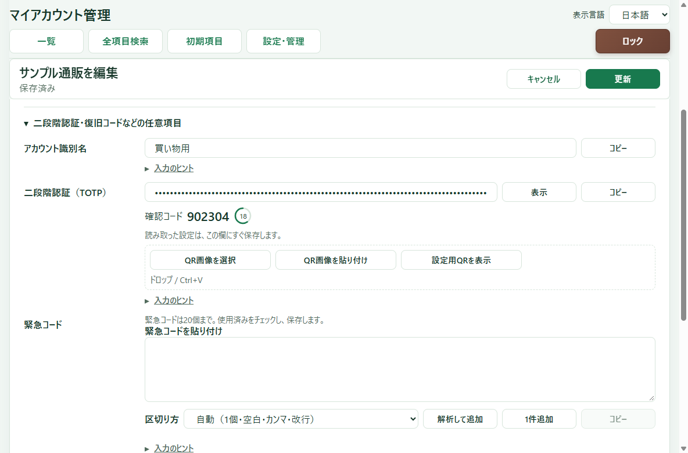
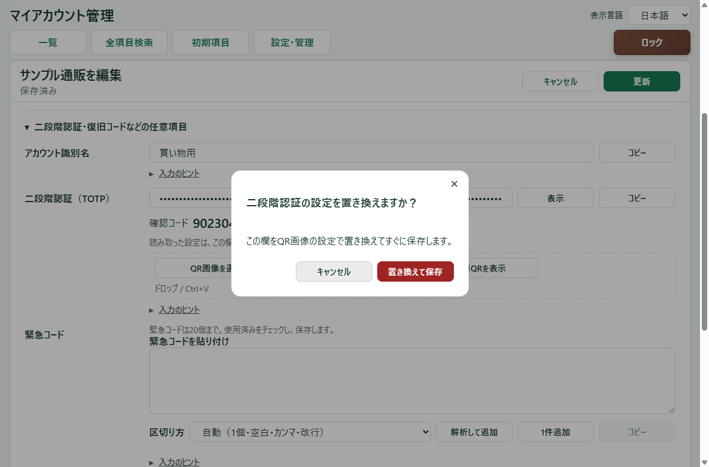
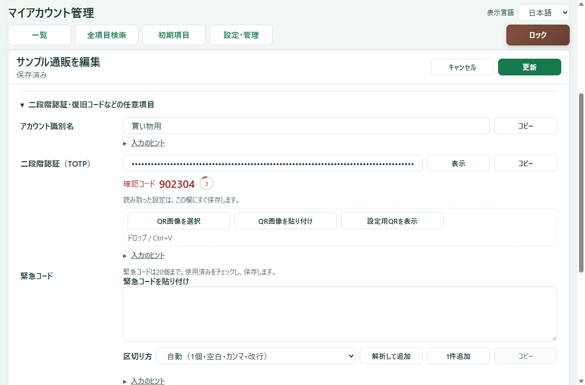
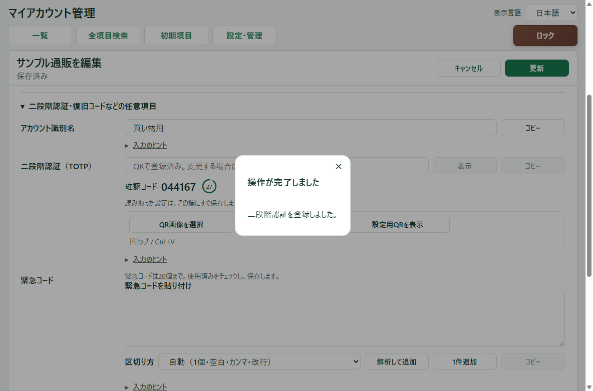
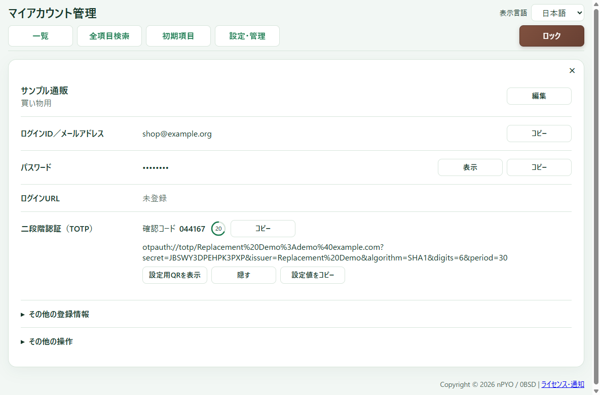
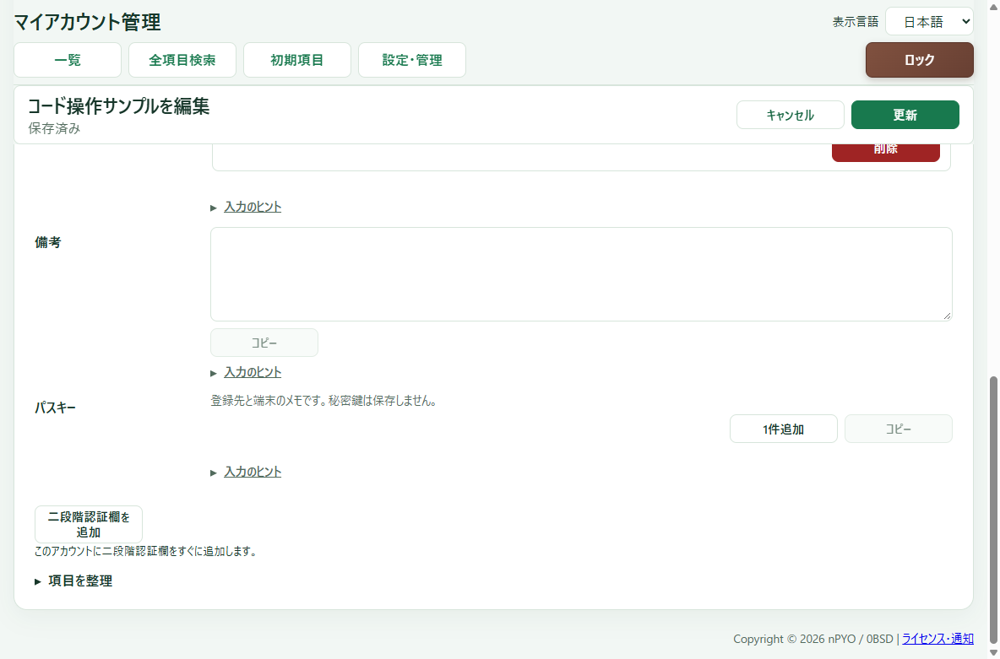
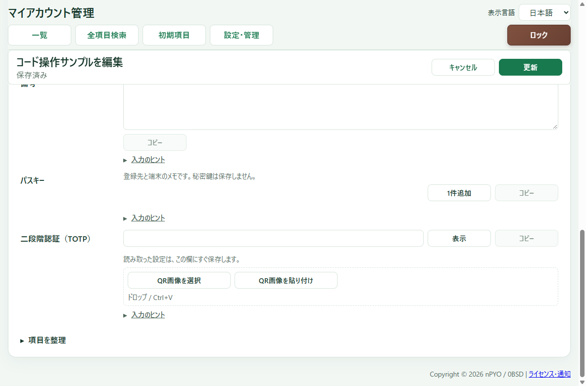
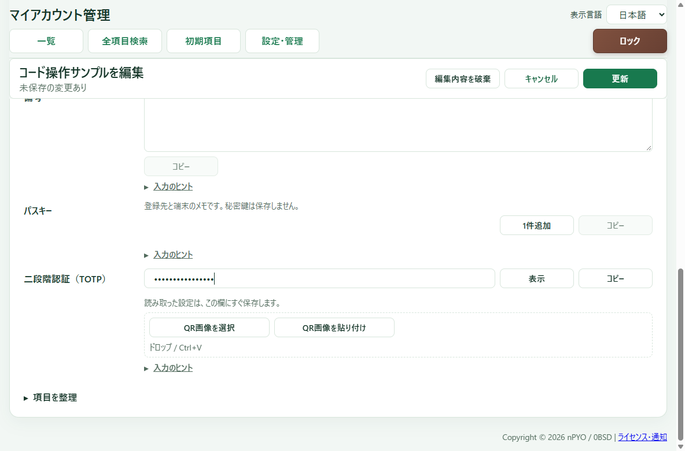
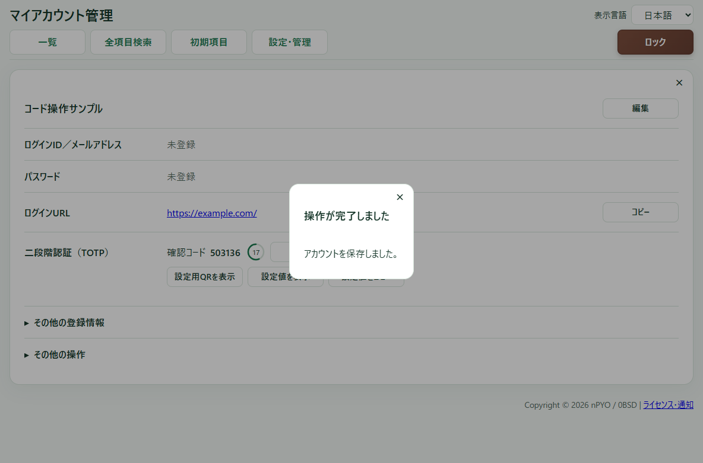
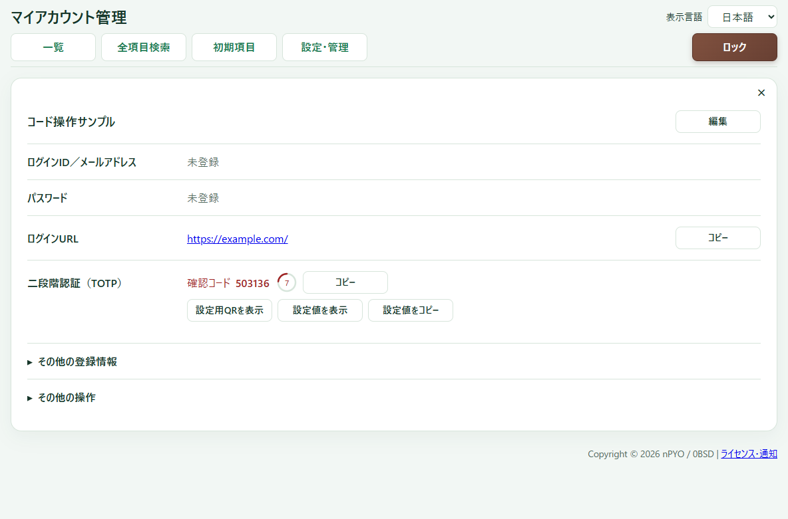

29二段階認証の更新と欄追加
登録済み設定の置き換えと、二段階認証の欄がないアカウントへの欄追加を説明します。
手順一覧を開く（11手順）
既存設定を置き換える
1置き換える欄を選ぶ
対象の編集画面で任意項目を開きます。新しいQR画像をクリップボードにコピーし、対象欄の［QR画像を貼り付け］を押します。

2置換確認を読む
既存設定があると確認が出ます。中止する場合は［キャンセル］を押します。

3中止結果を確認する
元の編集画面へ戻り、置き換えは行われていません。

4置き換えて保存する
再び［QR画像を貼り付け］を押し、確認画面の［置き換えて保存］を押します。
5登録完了を確認する
［二段階認証を登録しました］を確認します。この操作で保存済みです。

6保存した設定を確認する
完了画面を閉じ、編集の［キャンセル］で詳細に戻ります。［設定値を表示］で新しい設定になったことを確認します。

欄を追加して手入力する
7欄がないアカウントで追加する
対象を編集し、画面下の［二段階認証欄を追加］を押します。

8追加された欄を確認する
二段階認証の入力欄とQR読み取り操作が表示されます。

9設定値を入力する
この例はQRではなく、サービスから取得する形式の設定値を直接入力します。入力後［更新］を押します。

10保存完了を確認する
［アカウントを保存しました］を確認します。手入力した値はこの更新で保存されます。

11確認コードを確認する
通知を閉じ、詳細画面に確認コードが表示されていることを確認します。QR画像で取り込む方法は28にあります。
